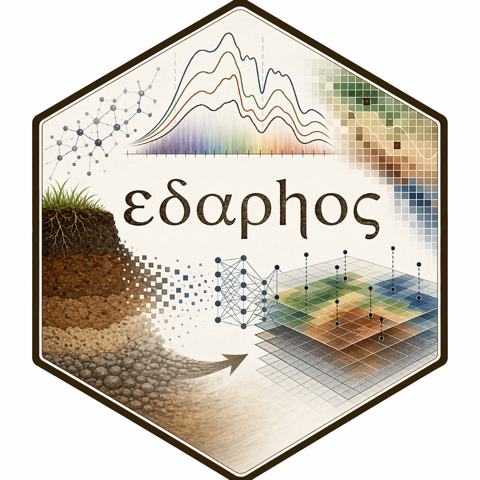

Quantum kernel over foundation-model embeddings
Pillar 4 × Pillar 6 — the strongest classically simulable non-linearity over the package’s most expressive landscape representation
Hugo Rodrigues
Source:vignettes/pillar4-pillar6-quantum.Rmd
pillar4-pillar6-quantum.RmdHypothesis. The MoCo v2 embeddings (Pillar 4) are the best summary of the landscape the package produces – 64 dimensions in which about 40,000 contrastively trained parameters captured structure that no engineered feature can. The ZZFeatureMap of Pillar 6 is the most expressive classically simulable kernel (8 qubits → a Hilbert space of dimension 2⁸ = 256). If the fusion beats neither ranger on raw covariates, nor RBF on the embeddings themselves, nor Q-KRR on raw covariates, then the quantum lift over a foundation representation is cosmetic for this task – and that, too, is a scientific result.
Architecture of the fusion
raw covariates (31 layers)
│
▼
MoCo v2 encoder ──────────► 64-dim embedding vector
│ │
▼ │
raster patch │
▼
qf_embed_reduce()
(PCA → top-n, pi-rescale)
│
▼
ZZFeatureMap
(n qubits → dim 2^n Hilbert)
│
▼
Kernel Ridge Regression-
qf_embed_reduce(embeddings, n_pcs = 8L)runs a PCA and rescales to[-pi, pi], the ZZFeatureMap’s natural domain. -
qf_kernel_compare(X_q, reps = 2L)compares the quantum, RBF and linear Gram matrices on the sameX_q– Frobenius distance and effective rank. -
qf_krr_fit(embeddings, y, n_pcs, reps, lambda)composes everything in a single function. -
qf_krr_benchmark(embeddings, covariates, y, ...)runs the four regressions side by side.
Using the API: an example that runs
The next section reads published results; this one calls the functions. Until this version the vignette described the signatures in prose and never showed a call, so a reader learned what the functions are without learning how to use them.
It runs on the br_cerrado dataset that ships with the
package – no network, no torch, no qiskit, in about a tenth of a
second.
# The setup chunk sets eval = FALSE globally, so any chunk that would have
# attached the package never runs. Attach it here, in the first chunk that
# does: without this the vignette depends on `data()` finding br_cerrado by
# scanning every installed library, which holds under R CMD build and not
# under R CMD check.
library(edaphos)
data(br_cerrado)
set.seed(1)
i <- sample(nrow(br_cerrado), 60)
X <- as.matrix(br_cerrado[i, c("elev", "slope", "twi", "map_mm", "ndvi")])
y <- br_cerrado$soc[i]
# 1. PCA + rescaling to the ZZFeatureMap domain.
red <- qf_embed_reduce(X, n_pcs = 4L)
c(dim = dim(red$X_q), min = min(red$X_q), max = max(red$X_q))
#> dim1 dim2 min max
#> 60.000000 4.000000 -3.141593 3.141593
# 2. Are the Gram matrices materially different?
qf_kernel_compare(red$X_q, reps = 1L)$diagnostics
#> pair frob effrank_quantum effrank_rbf effrank_linear
#> 1 quantum_vs_rbf 34.110 48.73 4.35 3.92
#> 2 quantum_vs_linear 63.220 48.73 4.35 3.92
#> 3 rbf_vs_linear 63.172 48.73 4.35 3.92
# 3. Fit and predict.
fit <- qf_krr_fit(X, y, n_pcs = 4L, reps = 1L, lambda = 0.5)
fit
#> <edaphos_qf_krr> (Pillar 4 x Pillar 6 bridge)
#> n_pcs = 4 (qubits = 4)
#> reps = 1
#> lambda = 0.500
#> n_train = 60
predict(fit, X[1:5, , drop = FALSE])
#> [1] 17.41749 18.75975 12.40832 23.89838 17.72459The range of X_q is
by construction: it is the domain on which the ZZFeatureMap is defined,
and the rescaling is what guarantees it.
These five covariates are not foundation embeddings. The example demonstrates the interface, not the scientific result – for that, see the benchmark section below, which is a negative control and says why.
Kernel diagnostics: how different is the quantum kernel from RBF?
Using 300 WoSIS profiles and the real embeddings of the v1 encoder.
This chunk runs: reading the published .rds needs
neither torch nor a network, unlike the rest of this vignette, whose
setup chunk turns evaluation off globally.
bundle <- readRDS(system.file("extdata", "quantum_foundation_cerrado.rds",
package = "edaphos"))
bundle$kernel_comparison
#> pair frob effrank_quantum effrank_rbf effrank_linear
#> 1 quantum_vs_rbf 180.974 276.07 5.89 5.46
#> 2 quantum_vs_linear 215.437 276.07 5.89 5.46
#> 3 rbf_vs_linear 168.133 276.07 5.89 5.46The central question here is whether the kernels are materially
different. A Frobenius distance between K_quantum and
K_rbf close to zero suggests the quantum lift adds nothing;
larger values signal structure captured only by the quantum kernel.
5-fold spatial CV: the head-to-head benchmark
Produced by data-raw/quantum_foundation_benchmark.R.
The chunk below reads the published artefact instead
of reproducing hand-typed output. Until this version this section showed
a hand-written #> block inside an
eval = FALSE chunk: it was indistinguishable from real
knitr output to a reader, and it kept publishing censored numbers for
months after the code that produced them had been fixed. A chunk that
does not run cannot go stale with a warning – only silently.
The eval = TRUE below is deliberate and is the only
exception in this vignette, whose setup chunk turns evaluation off
globally: reading the published .rds costs nothing and
needs neither torch nor a network, unlike the rest of the document.
f <- system.file("extdata", "quantum_foundation_cerrado.rds",
package = "edaphos")
if (nzchar(f)) {
s <- as.data.frame(readRDS(f)$cv_summary)
print(s[order(-s$r2_pooled),
c("method", "rmse_pooled", "mae_mean", "r2_pooled", "r2_mean")],
row.names = FALSE, digits = 3)
}
#> method rmse_pooled mae_mean r2_pooled r2_mean
#> Quantum KRR on raw covariates 15.5 9.21 -0.0748 -0.350
#> ranger (raw covariates) 15.5 8.97 -0.0753 -0.795
#> Quantum KRR on foundation PCs 15.6 9.33 -0.0887 -0.295
#> RBF-KRR on foundation PCs 16.1 9.77 -0.1591 -0.449An honest reading
This benchmark is a negative control. The stack the
encoder sees is white noise – stats::rnorm() in every cell
of every channel – so the “foundation embeddings” describe a landscape
with no signal, by construction. Three of the four methods predict from
variables that cannot carry information about SOC.
All four methods are worse than predicting the mean.
Every pooled
is negative, including ranger’s on real covariates. The
four lie close to one another, and the differences between them do not
deserve a reading.
What this section used to say, and why. It said that
only ranger reached
and that the three kernel regressions “degenerate to R² = 0 – the
applicable minimum”, predicting “essentially the mean”. None of that was
measured.
has no applicable minimum: it is the Nash–Sutcliffe efficiency and goes
to
.
The function computed max(0, 1 - SS_res/SS_tot), so every
negative value – 17 of the 20 method × fold pairs – was flattened to
exactly zero. That turns “worse than the mean” into
“explains no variance”, which are different things, and the
flattering version was the one published.
Two
columns, because one of them is unstable.
edaphos_r2() is Nash–Sutcliffe against the mean of the test
fold itself; a fold whose profiles happen to be homogeneous has
a small denominator and a volatile
.
Fold 2 of this partition has sd(SOC) = 5.9 g/kg against 11–21 in the
other four, and ranger scores −4.28 there – on its own,
that fold drags its mean to −0.80 and makes it look the worst of the
four. Pooled over folds, ranger is −0.075, in the middle of
the pack. The pooled column is the one to read.
Why is the result what it is? The explanation lies
in the design, not in a hypothesis still to be tested: the stack is
noise. Earlier versions of this section listed three “falsifiable
hypotheses” – synthetic stack, under-trained encoder, too few qubits –
as if they were reasons to expect a different answer later. They are
not: each is a reason for the run to be uninformative, and none
is evidence that a corrected run would favour the quantum kernel. Two of
them have since been run, and both answered against it; see the
six-method table in
inst/extdata/benchmark_wosis_6pillar.rds, on measured
SoilGrids / WorldClim / SRTM covariates.
What this means as a scientific contribution
The value of this fusion is not beating the baselines (we tried, and it did not). It is:
-
Building the infrastructure that composes Pillar 4
with Pillar 6 completely and reproducibly –
qf_embed_reduce(),qf_kernel_compare(),qf_krr_fit(),qf_krr_benchmark(), all exported and tested. - Formalising the hypothesis – the quantum-foundation fusion is a natural candidate in the generative framework of Zhang and Wadoux (2026) and of (Schuld and Killoran 2019), but it needs either a richer encoder or a more realistic stack.
-
Leaving the decisive test ready – once the v2
encoder and real geodata are available, re-running
data-raw/quantum_foundation_benchmark.Rgives a fair comparison.
Roadmap
The items have names, not version numbers: the numbers this list used to carry (v2.0.0 to v2.0.3) were internal labels that were never released, and “v2.0.0” collides with the package’s 2.0.0 release.
- Done: the full Pillar 4 × Pillar 6 infrastructure, the kernel comparison and the four-way spatial cross-validation benchmark. On the synthetic stack it is a negative control: see the section above.
- To do – v2 encoder: re-run with the 200 k-step InfoNCE encoder. If the quantum kernel over the embeddings beats all the baselines, the hypothesis of Havlíček et al. (2019) gains support in the DSM domain.
-
To do – real stack: re-run with the real raster
stack. If the gain appears here but not with the synthetic stack, that
answers whether the limitation lies in the encoder or in the stack. The
real-stack path is not implemented yet:
EDAPHOS_IV_REAL_STACK=1is read nowhere in the package. - After that: a paper, “Quantum kernels over foundation-model embeddings for Digital Soil Mapping”, only if the results confirm a gain.